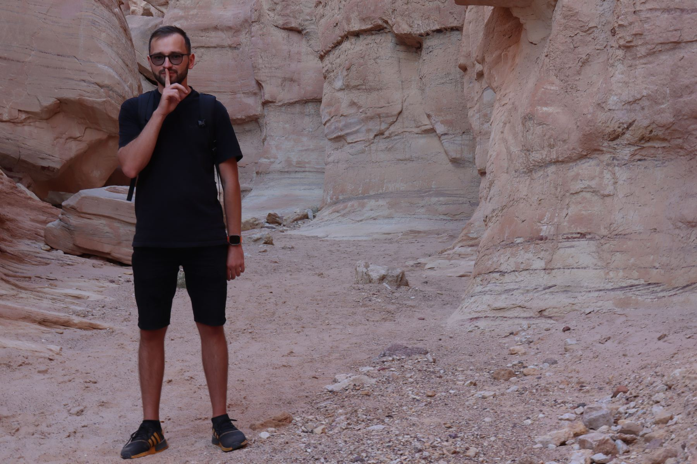
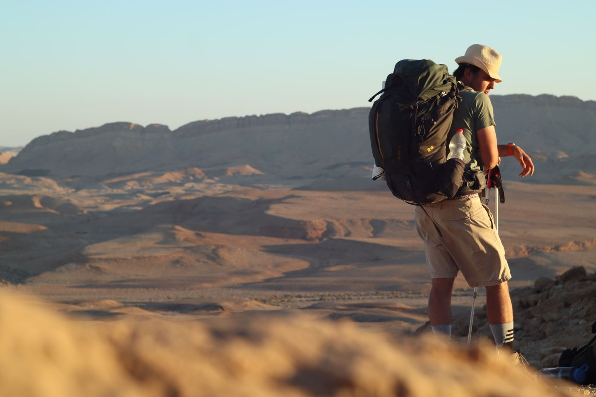
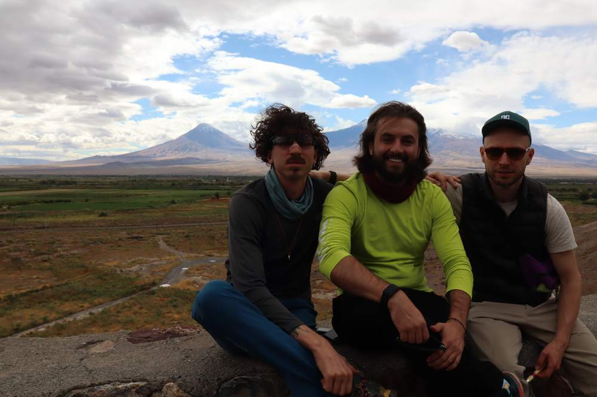

Традиционный поход на Хануку. Четыре дня в самых древних горах Израиля — с рюкзаком, палаткой и тишиной.
Это не просто пешее путешествие, а пространство для глубокого погружения в себя: возможность освободить голову от лишнего и найти моменты тишины. Помогают в этом сами горы и инструменты, которые мы используем по пути — медитация и психологические игры.
Слово «ретрит» вызывает разные ассоциации, но это прежде всего поход, требующий физической подготовки.
поэтому перед стартом мы созваниваемся с каждым участникомПрограмма
Собираемся в Эйлате в 18:00, добираемся самостоятельно. Разбиваем лагерь и ночуем на берегу Красного моря.
Утро начинается с медитации. После инструктажа — восьмичасовой переход по пустынным горам: около 14 км с набором высоты 350 м до лагеря в пустыне. Вечером вегетарианский ужин, вещи привозят в лагерь.
После утренней медитации поднимаемся на Шломо, 705 м — одну из самых высоких вершин региона. Путь занимает около семи часов. Ночуем в арендованном лагере в пустыне, палатки и ужин на месте.
Утро с медитацией, потом собираемся в обратную дорогу. Желающие едут на пляж Красного моря самостоятельно.


Оба дневных перехода можно посмотреть заранее и прикинуть свои силы.
Снаряжение
Одежда, вода и еда
Кто ведёт
Провёл десятки ночных переходов через Иудейскую пустыню и больше ста мужских кругов. Сертифицированный гид, ведущий мужских кругов (ManKind Project USA) и коуч ICF. В пустыне он прежде всего тот, кто уже прошёл этот путь и знает каждый его поворот в темноте.
Мест ограниченное количество. Напиши — созвонимся и обсудим детали.